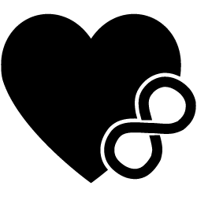

Committed to supporting the ethically non-monogamous by providing opportunities for learning and outreach.

Welcome!
Virginia Polyamory is a volunteer-based educational organization located in Richmond, Virginia.
We help provide representation for an all inclusive community of varied ethnicities, orientations, and genders, and aim to provide a safe space for polyamory to be discussed openly.
We hold regular social events, discussions, and meetings to support and educate those interested in or navigating consensually non-monogamous relationships.
Head over to our events page to see what we're up to and be sure to follow our social media to stay up to date!
Polyamory?
Polyamory is the practice of, or desire for, intimate relationships where individuals may have more than one partner, with the knowledge and consent of all partners. We grow up in a culture with many examples of monogamy and monogamous relationships, so having a successful polyamorous relationship can be unintuitive at times. Having peer support and exposure to other models can be invaluable.
Articles in the Spotlight
Life Gets Difficult
A difficult diagnosis makes a family reevaluate their perspective and reflect on polyamory's influence in their lives.
Explanations often turn into conversations of monogamy vs. polyamory, but this article looks at how they have a lot more in common than some might think.
There is no substitute for talking face to face with people who have had polyamorous relationships. Being able to meet others and talk about our relationships makes being polyamorous much easier. These relationships can be extremely fulfilling and the amount of joy I get from being polyamorous is hard to match. I had my first poly relationship almost a decade ago. Something just clicked and I realized that loving multiple people really felt right to me.
Testimonials
Hear what our members have to say about our community and being polyamorous!
Polyamory allows me to love without hesitation, not only sexually but in all aspects of my life. It is the understanding that the more love I give and receive, the more I appreciate and treasure the unique nuances of each connection. It helps pull me out of the worries and stress of day to day life and focus on the beauty of the people who are sharing my journey.
I find that poly is based in healthy, open, and honest communication. It requires, as I believe all relationships do, communication of your true needs, wants, and desires with someone who is actively doing the same. I find that when this real and honest communication happens many problems are resolved and happiness, stability, and calm can be found by all.
Richmond's polyamorous community has been a huge help in finding our way in this non-traditional lifestyle. Being able to chat with other local people about issues and solutions has been an overwhelmingly positive experience. Through poly groups in the area I have been able to become very mindful of my relationship choices. My husband and I have become able to shape our relationships with intent and overall have a happier and healthier life because of the help found in this community.
Polyamory means respect and freedom to love. It means that my partner is not my property and that I am not theirs. It means I can be open to all those sparks of connection that make others feel pangs of guilt or regret. It means I can appreciate the joy in my partner's spirit when they connect with someone new, something that monogamous people typically experience as betrayal. It means I get to learn new things with a massive support group of friends who love my lover enough to care for me.
Polyamory to me means being able to explore emotional potential with anyone you are attracted to. Polyamory creates a space where that can be done safely and with consideration of everyone involved. Being with those who are excited when I say, "Hey I met someone and they are awesome." has been very positive in my life and having those around me that encourage that has helped me grow as a person.
Poly is to me the ability to love multiple people at the same time and have your needs met in a variety of ways. To me poly is very open and freeing and lacks the confinement or resentment that could come with traditional monogamous relationships.